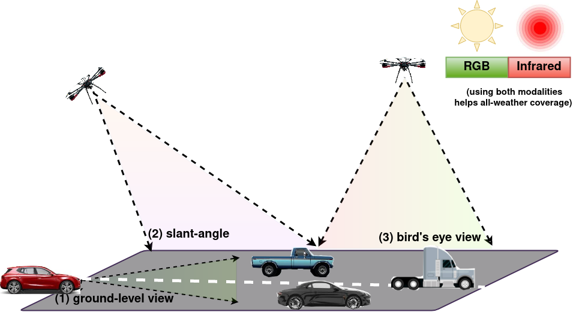
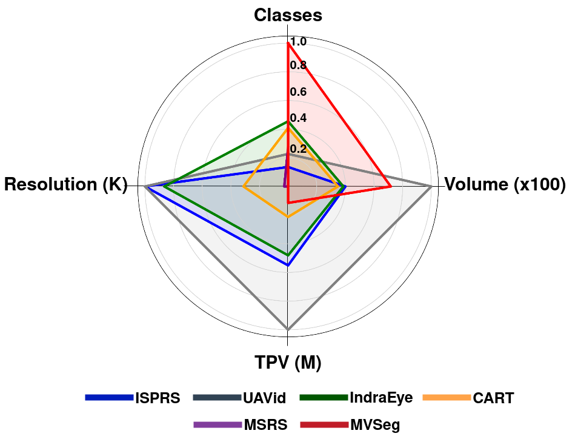
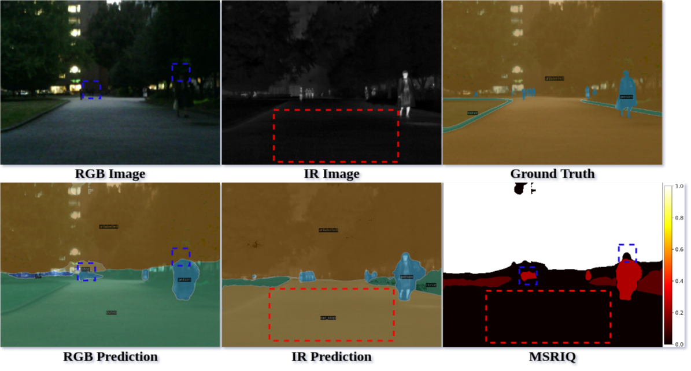
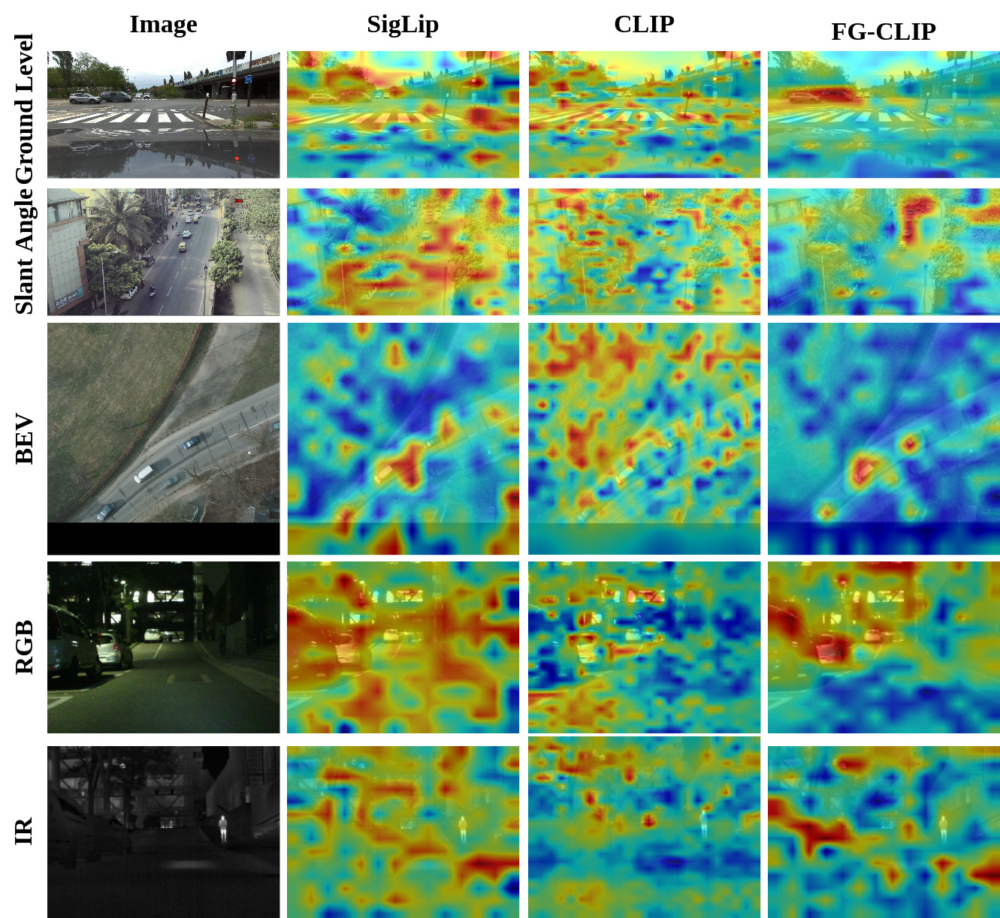
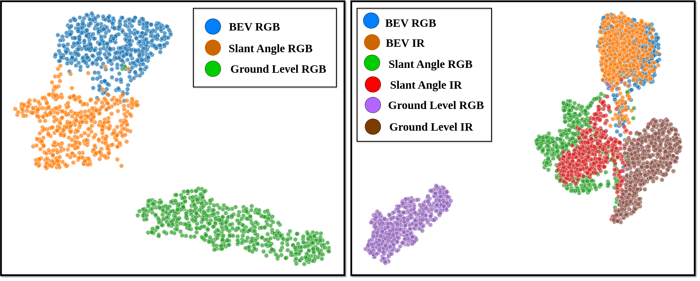
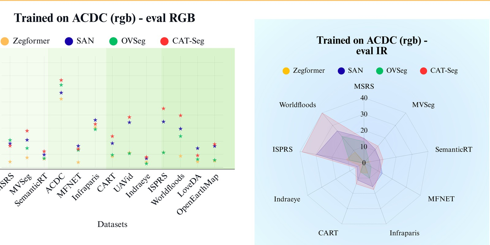
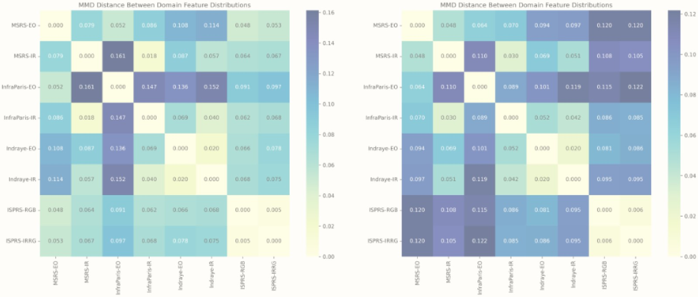
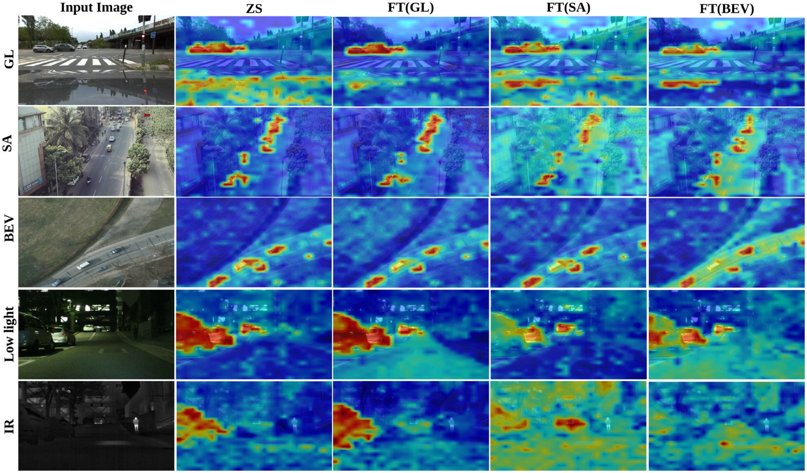

Pixel2Perspective: A Benchmark for Multi-Modal and Multi-View Generalization in Vision-Language Models
An expanded successor to AetherVision-Bench — from 6 RGB / 4 IR datasets to a 13-dataset, multi-view, multi-weather benchmark with a new uncertainty quantification framework.
Pixel2Perspective — ECCV-W 2026 (accepted) AetherVision-Bench — CVPR-W 2025 (published)
Overview
Open-vocabulary semantic segmentation (OVSS) models leverage CLIP-style vision-language pretraining to segment objects from open-ended text prompts, but their zero-shot generalization degrades sharply under real-world domain shifts. We first introduced AetherVision-Bench (CVPR 2025 Workshop) to systematically study this across viewing angle and sensor modality. Pixel2Perspective substantially expands that effort: more datasets (6→13), an added object-localization evaluation track for foundation VLMs (CLIP, SigLIP, FG-CLIP), explicit adverse-weather coverage, and a new Multi-Source RGB–IR Uncertainty Quantification (MSRIQ) metric for evaluating segmentation reliability across co-registered RGB/IR pairs.
AetherVision-Bench CVPR 2025 Workshop
An Open-Vocabulary RGB-Infrared Benchmark for Multi-Angle Segmentation across Aerial and Ground Perspectives

Ground-level, slant-angle, and bird's-eye viewpoints, evaluated across RGB and IR sensors.
Open-vocabulary semantic segmentation (OVSS) entails assigning semantic labels to each pixel in an image based on textual descriptions, leveraging world models like CLIP. However, these models face significant challenges in cross-domain generalization, hindering their practical efficacy in real-world applications. AetherVision-Bench introduces a benchmark for multi-angle segmentation across aerial and ground perspectives, facilitating an extensive evaluation of performance across different viewing angles and sensor modalities, and investigates the key factors that impact zero-shot transfer performance.
Key contributions:
- A taxonomy grounded in quantitative analysis of segmentation datasets, organized by look-angle: ground-level, slant-angle, and bird's-eye view.
- Evaluation across six RGB datasets (ISPRS, UAVid, IndraEye, CART, MSRS, MVSeg), four of which also provide co-registered IR imagery.
- A comprehensive evaluation of state-of-the-art zero-shot models, revealing that OVSS performance is heavily influenced by class semantics, textual similarity, and sensor modality.

Dataset balance across classes, resolution, volume, and total pixel volume (TPV).
Trained on COCO-Stuff, evaluated on RGB & IR (mIoU)
Click any column header to sort.
| Method | RGB | IR | ||||||||||
|---|---|---|---|---|---|---|---|---|---|---|---|---|
| ISPRS | UAVid | IndraEye | CART | MSRS | MVSeg | mIoU | IndraEye | CART | MSRS | MVSeg | mIoU | |
| SAN | 37.56 | 41.65 | 7.84 | 37.36 | 20.35 | 21.96 | 27.79 | 4.91 | 25.35 | 19.93 | 11.93 | 15.53 |
| Zegformer | 14.04 | 17.85 | 12.92 | 17.18 | 12.48 | 11.6 | 14.34 | 3.21 | 3.34 | 7.38 | 3.4 | 4.33 |
| OVSeg | 17.52 | 33.69 | 13.4 | 31.67 | 19.36 | 14.87 | 21.75 | 6.82 | 16.46 | 13.91 | 5.29 | 10.62 |
| CAT-Seg | 45.36 | 41.55 | 12.84 | 39.66 | 26.63 | 22.27 | 31.39 | 6.7 | 20.02 | 17.85 | 12.62 | 14.30 |
| OVSeg-L | 31.03 | 38.79 | 16.44 | 35.21 | 19.98 | 19.58 | 26.84 | 12.48 | 20.7 | 15.53 | 9.01 | 14.43 |
| CAT-Seg-L | 50.92 | 41.9 | 16.22 | 39.85 | 20.77 | 26.47 | 32.69 | 11.74 | 25.84 | 19.44 | 15.32 | 18.09 |
Sensor-shift remains the dominant failure mode: every method's mIoU roughly halves moving from RGB to IR, even for the strongest model, CAT-Seg-L.
Pixel2Perspective ECCV-W 2026 — Accepted
A Benchmark for Multi-Modal and Multi-View Generalization in Vision-Language Models
Embodied AI systems, such as drones and autonomous vehicles, improve navigation by enhancing perception in environments containing unseen objects. While Vision-Language Models (VLMs) offer strong image understanding, their real-world application is underexplored. Pixel2Perspective benchmarks multi-angle object localization and open-vocabulary segmentation across both aerial and ground perspectives, spanning varied outdoor conditions, sim-to-real scenarios, and multiple sensors, including infrared. We further introduce Multi-Source RGB–IR Uncertainty Quantification (MSRIQ), which jointly models aleatoric and epistemic uncertainties across RGB and infrared imagery.
What's new relative to AetherVision-Bench:
- Expanded from 6 to 13 datasets, organized into four categories — General (MSRS, MVSeg, SemanticRT), Autonomous/adverse-weather (ACDC, MFNet, InfraParis), Slant-angle (CART, UAVid, IndraEye), and Bird's-eye view (ISPRS, WorldFloods, LoveDA, OpenEarthMap).
- Adds an object-localization evaluation track, comparing Grad-CAM behavior of CLIP, SigLIP, and FG-CLIP across viewpoints, modalities, and night/IR conditions.
- Introduces MSRIQ:
IoU(PRGB ∩ PIR) / IoU(PRGB ∪ PIR), quantifying pixel-level agreement between a model's RGB and IR predictions to flag regions of high cross-modal uncertainty without needing ground truth. - UMAP analysis showing viewpoint- and modality-specific clustering of CLIP features — direct evidence for why single-viewpoint fine-tuning fails to generalize.
Dataset composition
The 13 datasets span all three viewpoints, both sensor modalities, and a range of adverse weather/lighting conditions.
| Dataset | MSRS | MVSeg | SemanticRT | ACDC | MFNet | Infraparis | CART | UAVid | Indraeye | ISPRS | WorldFloods | LoveDA | OpenEarthMap |
|---|---|---|---|---|---|---|---|---|---|---|---|---|---|
| View Angle | |||||||||||||
| Ground view | ✓ | ✓ | ✓ | ✓ | ✓ | ✓ | ✗ | ✗ | ✗ | ✗ | ✗ | ✗ | ✗ |
| Slant-angle view | ✗ | ✗ | ✗ | ✗ | ✗ | ✗ | ✓ | ✓ | ✓ | ✗ | ✗ | ✗ | ✗ |
| Bird's-eye view | ✗ | ✗ | ✗ | ✗ | ✗ | ✗ | ✗ | ✗ | ✗ | ✓ | ✓ | ✓ | ✓ |
| Modality | |||||||||||||
| RGB | ✓ | ✓ | ✓ | ✓ | ✓ | ✓ | ✓ | ✓ | ✓ | ✓ | ✓ | ✓ | ✓ |
| IR | ✓ | ✓ | ✓ | ✗ | ✓ | ✓ | ✓ | ✗ | ✓ | ✓ | ✓ | ✗ | ✗ |
| Weather / Lighting | |||||||||||||
| Night | ✓ | ✗ | ✗ | ✓ | ✗ | ✗ | ✗ | ✗ | ✓ | ✗ | ✗ | ✗ | ✗ |
| Clear | ✓ | ✓ | ✓ | ✗ | ✓ | ✓ | ✓ | ✓ | ✓ | ✓ | ✓ | ✓ | ✓ |
| Snow | ✗ | ✗ | ✗ | ✓ | ✗ | ✗ | ✗ | ✗ | ✗ | ✗ | ✗ | ✗ | ✗ |
| Rain | ✗ | ✗ | ✗ | ✓ | ✗ | ✗ | ✗ | ✗ | ✗ | ✗ | ✗ | ✗ | ✗ |
| Fog | ✗ | ✗ | ✗ | ✓ | ✗ | ✗ | ✗ | ✗ | ✗ | ✗ | ✗ | ✗ | ✗ |

MSRS night scene: CAT-Seg's RGB and IR predictions disagree exactly where MSRIQ flags high uncertainty — ground truth confirms the RGB sensor missed the person.

FG-CLIP localizes more tightly across slant-angle, BEV, and night/IR conditions than CLIP or SigLIP, but all three degrade in low light.

RGB features cluster tightly by viewpoint (left); adding IR (right) introduces further cross-modal dispersion — visual evidence of compounding domain gaps.
Trained on COCO-Stuff, evaluated on RGB (mIoU)
Click any column header to sort.
| Method | General | Autonomous | Slant-angle | BEV | |||||||||
|---|---|---|---|---|---|---|---|---|---|---|---|---|---|
| MSRS | MVSeg | SemanticRT | ACDC | MFNet | Infraparis | CART | UAVid | Indraeye | ISPRS | Worldfloods | LoveDA | OpenEarthMap | |
| Zegformer | 12.48 | 11.6 | 9.55 | 31.81 | 10.41 | 24.22 | 17.18 | 17.85 | 12.92 | 14.56 | 13.6 | 7.68 | 10.10 |
| SAN | 20.35 | 21.96 | 12.56 | 35.49 | 21.05 | 31.04 | 37.36 | 41.65 | 7.84 | 37.56 | 30.10 | 19.53 | 22.52 |
| OVSeg | 19.36 | 14.87 | 14.25 | 38.37 | 18.32 | 25.58 | 31.67 | 33.69 | 13.4 | 23.56 | 30.14 | 7.42 | 12.37 |
| CAT-Seg | 26.63 | 22.27 | 16.16 | 39.09 | 28.87 | 34.26 | 39.66 | 41.55 | 12.84 | 50.1 | 38.25 | 11.61 | 22.90 |
| SAN-L | 17.07 | 23.90 | 16.62 | 43.99 | 17.22 | 36.17 | 39.39 | 43.41 | 10.56 | 52.06 | 45.93 | 20.08 | 23.79 |
| OVSeg-L | 19.98 | 19.58 | 14.01 | 39.97 | 19.21 | 24.82 | 35.21 | 38.79 | 16.44 | 35.46 | 22.87 | 19.20 | 18.53 |
| CAT-Seg-L | 20.77 | 26.47 | 17.44 | 47.47 | 22.20 | 38.35 | 39.85 | 41.90 | 16.22 | 50.92 | 39.54 | 40.87 | 26.61 |
Trained on COCO-Stuff, evaluated on IR (mIoU)
Click any column header to sort.
| Method | General | Autonomous | Slant-angle | BEV | |||||
|---|---|---|---|---|---|---|---|---|---|
| MSRS | MVSeg | SemanticRT | MFNet | Infraparis | CART | Indraeye | ISPRS (irrg) | Worldfloods | |
| Zegformer | 7.38 | 3.4 | 3.65 | 4.44 | 5.59 | 3.34 | 3.21 | 12.36 | 12.3 |
| SAN | 19.93 | 11.93 | 11.2894 | 18.1561 | 12.7672 | 25.35 | 4.91 | 45.0565 | 31.7526 |
| OVSeg | 13.91 | 5.29 | 9.99 | 12.58 | 10.19 | 16.46 | 6.2 | 17.52 | 37.36 |
| CAT-Seg | 17.85 | 12.62 | 11.59 | 21.73 | 13.61 | 20.02 | 6.7 | 45.36 | 35.72 |
| SAN-L | 12.7325 | 14.812 | 12.3079 | 14.3064 | 16.0332 | 21.1193 | 7.5556 | 51.4542 | 48.2444 |
| OVSeg-L | 15.53 | 9.01 | 13.4947 | 10.9737 | 11.3728 | 20.7 | 12.48 | 31.0294 | 31.4848 |
| CAT-Seg-L | 19.44 | 15.32 | 17.6009 | 21.9945 | 15.6032 | 25.84 | 11.74 | 50.9261 | 44.4439 |
CAT-Seg-L leads on both modalities, but the IR columns are consistently 2–3× lower than their RGB counterparts — sensor shift, not viewpoint alone, is the binding constraint.
Cross-Domain Generalization: Train on One, Evaluate on All
Beyond COCO-Stuff zero-shot transfer, we fine-tune ZegFormer, SAN, OVSeg, and CAT-Seg on a single RGB training source — MSRS, ACDC, IndraEye, or OpenEarthMap — and evaluate every model on all 13 RGB datasets and the available IR datasets. This reveals how well a model trained on one viewpoint/domain transfers to every other viewpoint, weather condition, and sensor modality.
Trained on MSRS (RGB) — evaluated on RGB
Click any column header to sort.
| Method | General | Autonomous | Slant-angle | BEV | |||||||||
|---|---|---|---|---|---|---|---|---|---|---|---|---|---|
| MSRS | MVSeg | SemanticRT | ACDC | MFNet | Infraparis | CART | UAVid | Indraeye | ISPRS | Worldfloods | LoveDA | OpenEarthMap | |
| Zegformer | 71.49 | 4.9 | 15.64 | 6.49 | 82.44 | 5.79 | 3.41 | 4.76 | 6.68 | 4.6 | 13.44 | 2.46 | 0.483 |
| SAN | 68.63 | 7.77 | 10.8413 | 8.9212 | 76.6457 | 10.8413 | 12.27 | 13.86 | 5.02 | 11.6547 | 23.4404 | 3.0824 | 5.8102 |
| OVSeg | 65 | 4.55 | 9.39 | 7.21 | 57.12 | 4.89 | 2.81 | 4.18 | 5.16 | 2.18 | 17.33 | 2.81 | 1.1983 |
| CAT-Seg | 71.93 | 9.24 | 18.46 | 20.5 | 77.52 | 15.02 | 22.87 | 28.34 | 7.06 | 18.34 | 42 | 5.78 | 0.9767 |
Trained on MSRS (RGB) — evaluated on IR
Click any column header to sort. (– = no IR imagery available for this dataset)
| Method | General | Autonomous | Slant-angle | BEV | |||||
|---|---|---|---|---|---|---|---|---|---|
| MSRS | MVSeg | SemanticRT | MFNet | Infraparis | CART | Indraeye | ISPRS | Worldfloods | |
| Zegformer | 34.83 | 1.86 | 14.45 | 26.38 | 4.88 | 3.76 | 8.06 | 4.59 | 14.5 |
| SAN | 30.18 | 2.2 | 13.0918 | 25.7378 | 4.5396 | 5.9 | 2.29 | 10.1078 | 20.9599 |
| OVSeg | 28.66 | 1.39 | 10.02 | 22.87 | 3.87 | 2.65 | 3.81 | 2.1 | 10.39 |
| CAT-Seg | 33.59 | 4.47 | 17.43 | 30.51 | 7.48 | 10.34 | 4.33 | 13.59 | 40.16 |
Trained on ACDC (RGB) — evaluated on RGB
Click any column header to sort.
| Method | General | Autonomous | Slant-angle | BEV | |||||||||
|---|---|---|---|---|---|---|---|---|---|---|---|---|---|
| MSRS | MVSeg | SemanticRT | ACDC | MFNet | Infraparis | CART | UAVid | Indraeye | ISPRS | Worldfloods | LoveDA | OpenEarthMap | |
| Zegformer | 4.27 | 7.43 | 6.52 | 52.3 | 3.88 | 30.54 | 8.39 | 11.22 | 4.05 | 11.36 | 8.65 | 4.33 | 4.8937 |
| SAN | 18.1951 | 20.9443 | 9.6991 | 57.0125 | 16.3903 | 36.1579 | 18.3803 | 34.3446 | 6.8412 | 34.9013 | 29.5156 | 14.5769 | 16.2331 |
| OVSeg | 20.83 | 14.65 | 6.89 | 62.96 | 13.24 | 29.04 | 9.48 | 10.63 | 2.89 | 11.3 | 23.8 | 6.14 | 5.5678 |
| CAT-Seg | 16.42 | 27.9 | 12.21 | 66.63 | 14 | 33.05 | 23.75 | 38.38 | 7.85 | 44.95 | 39.63 | 9.11 | 17.6908 |
Trained on ACDC (RGB) — evaluated on IR
Click any column header to sort. (– = no IR imagery available for this dataset)
| Method | General | Autonomous | Slant-angle | BEV | |||||
|---|---|---|---|---|---|---|---|---|---|
| MSRS | MVSeg | SemanticRT | MFNet | Infraparis | CART | Indraeye | ISPRS | Worldfloods | |
| Zegformer | 0.45 | 0.4 | 4.38 | 0.2 | 6.8 | 6.4 | 3.19 | 11.12 | 8.59 |
| SAN | 15.17 | 10.8006 | 9.7962 | 12.9782 | 15.7008 | 11.2828 | 4.9676 | 29.6112 | 25.5942 |
| OVSeg | 13.04 | 4 | 2.98 | 5.07 | 10.07 | 6.04 | 0.64 | 9.11 | 21.31 |
| CAT-Seg | 14.77 | 13.43 | 11.86 | 11.3 | 17.5 | 13.82 | 5.95 | 38.63 | 39.96 |

Trained on IndraEye (RGB) — evaluated on RGB
Click any column header to sort.
| Method | General | Autonomous | Slant-angle | BEV | |||||||||
|---|---|---|---|---|---|---|---|---|---|---|---|---|---|
| MSRS | MVSeg | SemanticRT | ACDC | MFNet | Infraparis | CART | UAVid | Indraeye | ISPRS | Worldfloods | LoveDA | OpenEarthMap | |
| Zegformer | 4.72 | 2.9 | 12.28 | 5.29 | 4.58 | 4.82 | 3.51 | 7.32 | 75.52 | 8.02 | 18.42 | 0.86 | 2.188 |
| SAN | 9.28 | 6.12 | 7.5344 | 7.2805 | 12.547 | 7.4496 | 6.04 | 15.57 | 75.84 | 14.5294 | 23.7154 | 4.0761 | 6.1339 |
| OVSeg | 5.68 | 4.12 | 14.11 | 6.87 | 9.99 | 5.44 | 9 | 16.23 | 61.8 | 10.81 | 20.48 | 0.61 | 2.9598 |
| CAT-Seg | 4.03 | 8.84 | 8.36 | 10.93 | 4.27 | 12.63 | 15.3 | 17.62 | 58.88 | 19.76 | 32.37 | 4.53 | 15.6952 |
Trained on IndraEye (RGB) — evaluated on IR
Click any column header to sort. (– = no IR imagery available for this dataset)
| Method | General | Autonomous | Slant-angle | BEV | |||||
|---|---|---|---|---|---|---|---|---|---|
| MSRS | MVSeg | SemanticRT | MFNet | Infraparis | CART | Indraeye | ISPRS | Worldfloods | |
| Zegformer | 2.66 | 0.48 | 9.34 | 2.04 | 1.35 | 2.31 | 28.05 | 7.8 | 21.05 |
| SAN | 10.51 | 3.12 | 11.7557 | 13.11 | 3.6677 | 3.21 | 23.24 | 13.3299 | 26.1542 |
| OVSeg | 2.53 | 1.55 | 13.21 | 7.1 | 1 | 5.12 | 22.41 | 10.07 | 20.48 |
| CAT-Seg | 4.99 | 4.94 | 9.14 | 3.96 | 5.31 | 8.07 | 33.9 | 17.21 | 28.25 |
Trained on OpenEarthMap (RGB) — evaluated on RGB
Click any column header to sort.
| Method | General | Autonomous | Slant-angle | BEV | |||||||||
|---|---|---|---|---|---|---|---|---|---|---|---|---|---|
| MSRS | MVSeg | SemanticRT | ACDC | MFNet | Infraparis | CART | UAVid | Indraeye | ISPRS | Worldfloods | LoveDA | OpenEarthMap | |
| Zegformer | 0.99 | 0.13 | 0.11 | 2.28 | 0.87 | 2.95 | 6.46 | 18.26 | 0.15 | 27 | 10.43 | 28.76 | 65.859 |
| SAN | 1.7445 | 4.5935 | 1.2526 | 5.4772 | 5.9503 | 5.8559 | 16.2881 | 29.1109 | 4.0448 | 27.3944 | 22.4425 | 32.6261 | 66.622 |
| OVSeg | 1.53 | 0.56 | 1.7 | 2.64 | 1.04 | 4.05 | 4.9 | 17.52 | 0.85 | 16.84 | 19.9 | 32.43 | 41.7448 |
| CAT-Seg | 4.36 | 7.89 | 4.88 | 24.31 | 4.73 | 17.19 | 30.64 | 32.49 | 6.98 | 38.64 | 45.51 | 48.7 | 70.1242 |
Trained on OpenEarthMap (RGB) — evaluated on IR
Click any column header to sort. (– = no IR imagery available for this dataset)
| Method | General | Autonomous | Slant-angle | BEV | |||||
|---|---|---|---|---|---|---|---|---|---|
| MSRS | MVSeg | SemanticRT | MFNet | Infraparis | CART | Indraeye | ISPRS | Worldfloods | |
| Zegformer | 0.31 | 0.01 | 0.12 | 0.1 | 0.21 | 2.46 | 0.31 | 24.82 | 28.31 |
| SAN | 6.2642 | 2.2673 | 4.2731 | 5.8894 | 1.932 | 8.0642 | 5.2681 | 22.2158 | 32.9886 |
| OVSeg | 0.37 | 0.1 | 0.7 | 0.21 | 0.46 | 3.71 | 0.72 | 13.29 | 27.93 |
| CAT-Seg | 1.43 | 2.2 | 4.59 | 1.15 | 4.65 | 14.03 | 2.08 | 32.72 | 54.35 |
Sim-to-real transfer: OpenEarthMap
Models fine-tuned on simulated OpenEarthMap imagery, evaluated on simulation (in-domain) vs. four real-world RGB targets and one SAR target.
| Method | mIoU on Sim | OpenEarthMap (RGB) | ISPRS (RGB) | Worldfloods (RGB) | LoveDA (RGB) | OpenEarthMap (SAR) |
|---|---|---|---|---|---|---|
| Zegformer | 82.77 | 21.00 | 21.23 | 17.04 | 13.60 | 5.65 |
| SAN | 72.31 | 26.61 | 30.22 | 31.56 | 15.52 | 3.09 |
| OVSeg | 70.64 | 14.02 | 17.36 | 24.02 | 8.88 | 4.37 |
| CAT-Seg | 75.49 | 20.45 | 32.32 | 38.55 | 23.94 | 4.23 |
Every model exhibits a sharp accuracy drop moving from simulation to real-world RGB data — CAT-Seg falls from 75.49 mIoU on sim to 20.45 on real OpenEarthMap RGB — and drops further still on SAR.

MMD distance between domain feature distributions is moderate in the zero-shot CLIP encoder (left) but increases after fine-tuning (right) — embeddings diverge further across domains, which works against cross-domain generalization even as in-domain accuracy improves.

Grad-CAM for CAT-Seg's CLIP encoder, localizing a car under ground-level (GL), slant-angle (SA), bird's-eye-view (BEV), low-light, and IR conditions. The model fine-tuned on slant-angle view (FT(SA)) produces the noisiest, least-localized activations of the three — slant-angle is the hardest viewpoint to fine-tune on.
Key findings from the cross-domain study
- CAT-Seg is the most robust model across nearly every training/evaluation combination, regardless of which domain it was fine-tuned on.
- Training on a ground-level dataset (ACDC) transfers reasonably well to other ground-level domains, but mIoU drops sharply on slant-angle and BEV targets.
- Training on a slant-angle dataset (IndraEye) generalizes worse overall than ground-level training — slant-angle is the most brittle viewpoint to fine-tune from.
- IR evaluation trails RGB by a wide margin under every training source, confirming sensor shift compounds with viewpoint shift rather than substituting for it.
- Domain feature divergence (MMD) increases after fine-tuning, suggesting that adapting to one domain pulls the encoder's features further from other domains.
- Sim-to-real transfer causes a sharp accuracy drop for every model, even the strongest (CAT-Seg: 75.49 mIoU on sim → 20.45 on real OpenEarthMap RGB).
BibTeX
@inproceedings{sikdar2025aethervision,
title={AetherVision-Bench: An Open-Vocabulary RGB-Infrared Benchmark for Multi-Angle Segmentation across Aerial and Ground Perspectives},
author={Sikdar, Aniruddh and Gandhamal, Aditya and Sundaram, Suresh},
booktitle={Workshop on Foundation Models Meet Embodied Agents at CVPR 2025 (Non-archival Track)},
year={2025},
note={Accepted (Non-archival)},
url={https://arxiv.org/abs/2506.03709}
}
@inproceedings{gandhamal2026pixel2perspective,
title={Pixel2Perspective: A Benchmark for Multi-Modal and Multi-View Generalization in Vision-Language Models},
author={Gandhamal, Aditya and Sikdar, Aniruddh and Kishor, Arya and Sundaram, Suresh},
booktitle={Proceedings of the European Conference on Computer Vision Workshops (ECCVW), 2nd Workshop on Multimodal Reasoning and Slow Thinking in the Large Model Era: Towards System 2 and Beyond},
year={2026}
}